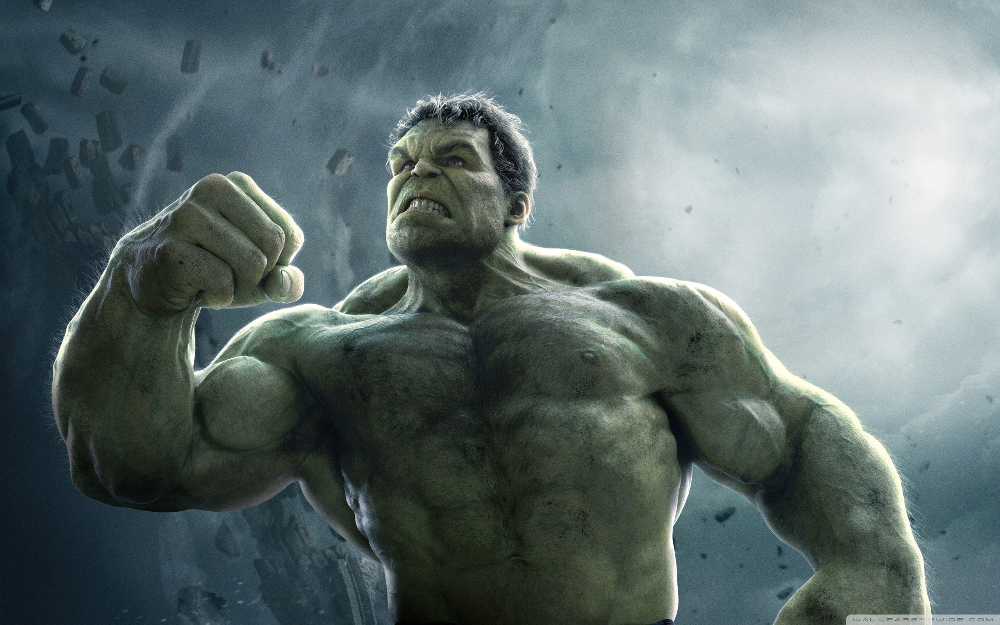
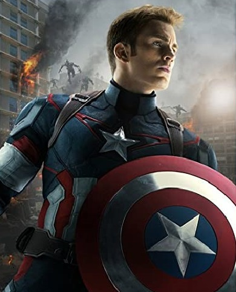

Stan impreună cu mai mulți artiști (mai ales Jack Kirby și Steve Ditko), a creat multe caractere, cum ar fi: Spider-Man, Fantastic Four, X-Men, Avengers, Iron Man, Hulk, Thor, Daredevil, Doctor Strange, etc. Compania Marvel Comics la care a fost unul din principalii creatori a devenit o corporație multimedia care a dominat domeniul benzilor desenate (comics)
Spider-Man

Omul Păianjen (Peter Benjamin Parker) este un personaj fictiv dintr-o bandă desenată apărută pentru prima dată în numărul 15 al revistei Amazing Fantasy (august 1962), fiind creat de Stan Lee și Steve Ditko, pentru Marvel Comics.
De atunci personajul Spider-Man stă la baza unei puternice industrii ce constă în jocuri, benzi desenate, filme și alte articole multimedia, toate aparținând unei game largi de produse.
Hulk
Hulk este un fictiv super - erou care apare în publicații de către editorul american Marvel Comics . Creat de scriitorul Stan Lee și artistul Jack Kirby , personajul a apărut pentru prima dată în numărul de debut al lui The Incredible Hulk (mai 1962). În aparițiile sale în benzi desenate, personajul este atât Hulk, un umanoid cu piele verde, masiv și musculos, care posedă un grad mare de forță fizică, cât și alter ego-ul său, Dr. Robert Bruce Banner , un slab fizic, retras din punct de vedere social și rezervat emoțional. fizician. Cei doi există ca personalități disociative independente și sunt supărați unul pe celălalt.
Lee a declarat că creația lui Hulk a fost inspirată de o combinație dintre Frankenstein și Dr. Jekyll și Mr. Hyde . Deși culoarea lui Hulk a variat de-a lungul istoriei publicării personajului, cea mai obișnuită culoare este verde.

Wolverine
Wolverine (James Howlett știut și ca Logan) este un supererou fictiv care apare în revistele de benzi desenate publicate de Marvel Comics. Personajul a apărut mai întâi în "Incredibilul Hulk" și a fost creat de scriitorul Len Wein și de regizorul artistic de la Marvel, John Romita Sr, care a desenat personajul iar apoi a fost mai întâi desenat pentru public de Herb Trimpe. Mai târziu, Wolverine s-a alăturat celorlalți X-Men în registrul "Cei noi, cei diferiți" din X-Men giganți (mai 1975). Autorul seriei X-Men, Chris Claremont a jucat un rol semnificativ în dezvoltarea ulterioară a personajului, asemenea artistului/scriitorului John Byrne, care a insistat să îl facă mai în vârstă decât celalți X-Men. Artistul Frank Miller a colaborat cu Claremont și a contribuit la editarea unei serii limitate, de patru numere cu titlul Wolverine, din septembrie până în decembrie 1982, în care a apărut pentru prima dată fraza lui Wolverine cea mai folosită: "Eu sunt cel mai bun în domeniul meu, însă domeniul meu nu este drăguț deloc"
Iron Man

Iron Man este un super-erou care apare în cărțile de benzi desenate americane publicate de Marvel Comics . Personajul a fost co-creat de scriitorul și editorul Stan Lee , dezvoltat de scenaristul Larry Lieber și proiectat de artiștii Don Heck și Jack Kirby . Personajul și-a făcut prima apariție în Tales of Suspense ( copertă din martie 1963) și a primit propriul său titlu în Iron Man #1 (mai 1968). Tot în 1963, personajul a fondat Răzbunătorii alături de Thor , Ant-Man , Wasp.și Hulk
Inițial, Iron Man a fost un vehicul pentru Stan Lee pentru a explora temele Războiului Rece , în special rolul tehnologiei și industriei americane în lupta împotriva comunismului . Re-imaginările ulterioare ale lui Iron Man au trecut de la motivele Războiului Rece la problemele contemporane ale vremii
Captain America
Căpitanul America este un super-erou care apare în cărțile de benzi desenate americane publicate de Marvel Comics . Creat de caricaturiștii Joe Simon și Jack Kirby , personajul a apărut pentru prima dată în Captain America Comics ( copertă din martie 1941) de la Timely Comics , un predecesor al Marvel Comics. Căpitanul America a fost conceput ca un supersoldat patriotic care a luptat adesea cu puterile Axei din cel de-al Doilea Război Mondialși a fost cel mai popular personaj al lui Timely Comics în perioada de război. Popularitatea supereroilor a scăzut în urma războiului, iar benzile desenate Captain America a fost întreruptă în 1950, cu o renaștere de scurtă durată în 1953. De când Marvel Comics a reînviat personajul în 1964, Captain America a rămas în publicare
Personajul poartă un costum care poartă un motiv steagul american și folosește un scut aproape indestructibil pe care îl aruncă ca un proiectil. Căpitanul America este alter ego-ul lui Steve Rogers , un tânăr artist fragil, îmbunătățit până la apogeul perfecțiunii umane printr-un „ ser super-soldat ” experimental, după ce s-a alăturat armatei pentru a ajuta eforturile guvernului Statelor Unite în al Doilea Război Mondial. Aproape de sfârșitul războiului, a fost prins în gheață și a supraviețuit în animație suspendatăpână când a fost reînviat în vremurile moderne. Deși Căpitanul America se luptă adesea să-și mențină idealurile de bărbat în afara timpului său, el rămâne o figură foarte respectată atât în publicul american, cât și în comunitatea supereroilor, care include devenirea liderului de lungă durată al Răzbunătorilor .